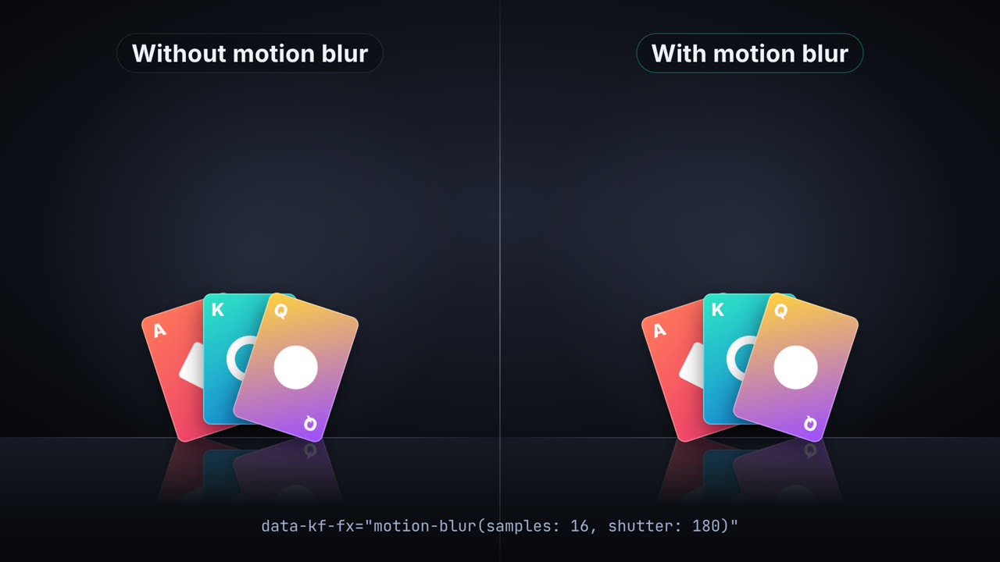
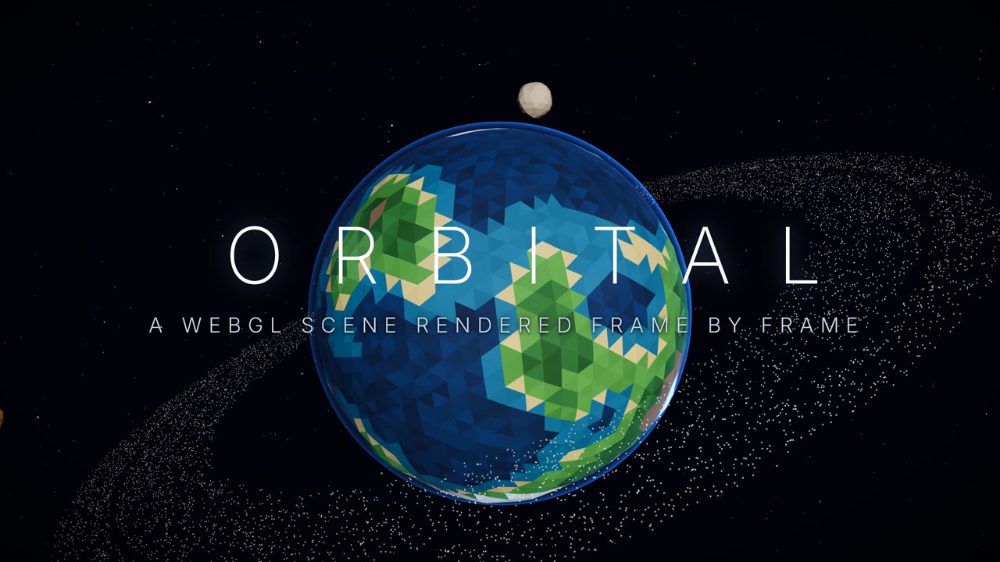
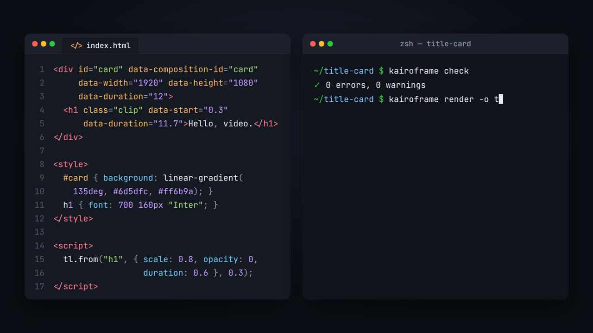
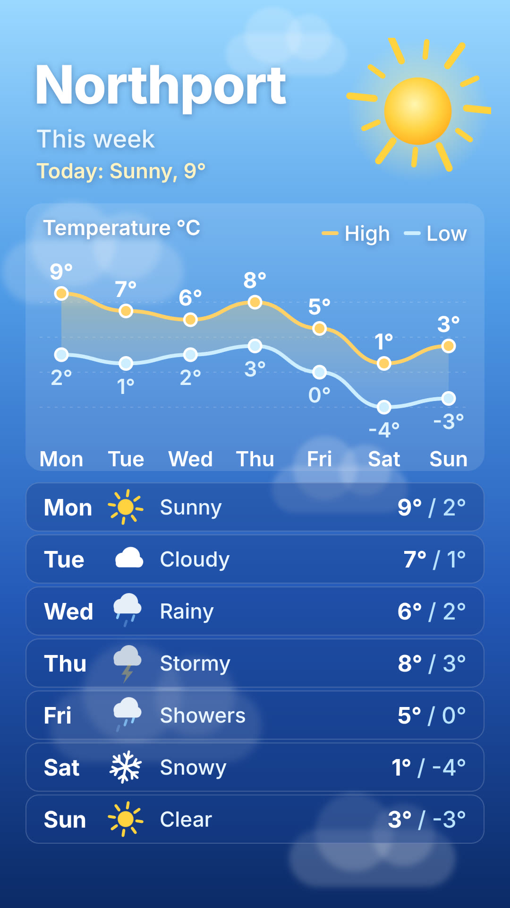

Samples, written by an agent,
rendered by KairoFrame
Each film below was written from one prompt by a fresh Claude Code session in an empty kairoframe init project,
with no hand edits, then rendered by KairoFrame. Every page shows the prompt, the tokens and cost of writing it, and how long the render took,
so you can make it again.
Aurora launch title
Kinetic typography and a living gradient for a product launch.

Bar chart race
24 months of data, bars that overtake each other, numbers that count up.

Motion blur, side by side
The same fast move twice: plain on the left, KairoFrame motion blur on the right.

Orbital, in Three.js
A WebGL scene from Three.js, driven frame by frame by the film's clock.

From HTML to MP4
A code editor and a terminal tell how a KairoFrame film is made.

Weekly weather, 9:16
A vertical social card: animated icons, a temperature line that draws itself.
Rendered with KairoFrame v0.3.1 for Linux on AMD Ryzen 9 9900X3D (12 cores), NVIDIA RTX 5090, Ubuntu 24.04. Costs are list prices from the session's usage report.